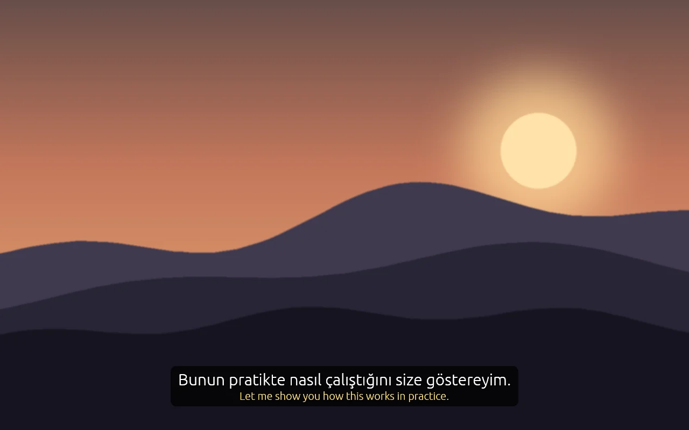
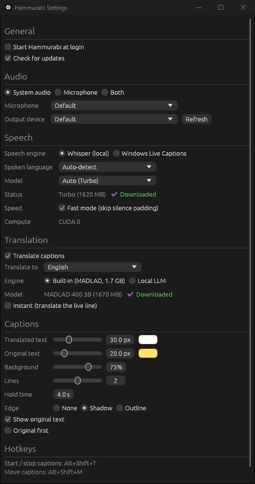

Version 0.4.0 is out
Live captions for everything your computer plays
Hammurabi turns system audio and your microphone into captions on screen, translated if you want. It runs on Windows, macOS and Linux, entirely on your machine.
WindowsWindows, NVIDIA RTX 50 seriesWindows, any GPU, with Speaker's voicemacOS (Apple silicon)Linux (x64)
Free and open source. No account. No API key. Audio never leaves your computer.

Download
Pick your system, unzip, run
Windows 10 and 11
Works on any 64-bit PC. Unzip it and run hammurabi.exe. SmartScreen may say the app is unrecognized: click More info, then Run anyway.
Windows with CUDA
Runs Whisper and translation on an RTX 50 series card: 30 to 56 ms per caption and about 0.3 s per translated sentence. Needs a recent NVIDIA driver. Older cards use the regular Windows build.
Windows with any GPU
Adds Speaker's voice, which reads each caption in the voice of the person speaking. Needs a GPU with Vulkan and about 1 to 2.5 GB of free VRAM. Its voice model is for personal, non-commercial use only.
macOS on Apple silicon
Uses the GPU through Metal. Move the app to Applications. It is not notarized, so macOS blocks the first launch: run xattr -dr com.apple.quarantine /Applications/Hammurabi.app, or open it once, click Done, then click Open Anyway in System Settings > Privacy & Security. When you start captions, allow System Audio Recording.
Linux x64
Extract it and run ./hammurabi. System audio needs PulseAudio or PipeWire with pipewire-pulse. Use an X11 session: Wayland blocks always-on-top windows and global hotkeys.
What it does
Captions for sound that has none
System audio
Films, streams, lectures and calls. If your computer plays it, Hammurabi captions it.
Microphone
Talking to someone in person? Captions appear as they speak, even across a language gap. Or caption both at once.
Optional translation
Into 26 languages with the built-in MADLAD-400 model, or with your own local LLM through Ollama or LM Studio.
Always on top overlay
Captions float above your windows, including borderless fullscreen. Drag them anywhere and style the text.
Tray and hotkeys
It lives in the tray and stays out of the way. Alt+Shift+T toggles captions, Alt+Shift+M moves them.
Fast on a GPU, fine on a CPU
Whisper runs on any CPU, on Apple GPUs through Metal, and on RTX 50 series cards with the CUDA build. Windows 11 can also use Live Captions as the engine.
Read aloud
Rather listen than read? Hammurabi can speak each finished caption, the translation if you use one, with the voices already on your computer. It stops listening while it talks, so its own voice never ends up in the captions. Pick a voice persona to match the mood: Iris, Ruby, Owen, Miles, Grace or Skye, from calm and slow to quick and bright. Press play on any of them to hear a sample first. Everything stays on your computer.
Sound should not stop at the language you speak. Hammurabi turns every voice on your computer into text you can read, and never sends a second of it anywhere.
How it works
Set it up once, then it stays out of sight
- Pick a sourceChoose system audio, your microphone, or both from the tray menu.
- Pick a languageLeave it on automatic, or name the spoken language for better accuracy. Turn on translation and pick a target language if you want one.
- Press the hotkeyCaptions appear in the overlay. Press Alt+Shift+T again to hide them. The app keeps running in the tray.
- Tune it in SettingsSpeech model, translation engine, caption size, colors, background, number of lines and how long they stay. Hammurabi can also start at login.

Privacy
Your audio stays on your computer
Speech recognition and translation both run locally, so nothing you hear or say is uploaded for processing. There is no account to create and no server of ours in the loop. The only network traffic is model downloads from Hugging Face and a check for new versions on GitHub. If you choose a local LLM for translation, captions go to that server on your machine. Read aloud uses the offline voices built into your operating system. The code is public on GitHub, so you can check it yourself.
FAQ
Questions people ask
Is it free?
Yes. Hammurabi is open source under the MIT License. There is no paid tier, no trial and no API key to buy.
Which download do I need?
On Windows, take the CUDA build only if you have an NVIDIA RTX 50 series card; everyone else takes the regular Windows build. Take the GPU build if you want Speaker's voice. Mac users take the macOS build (Apple silicon only), and Linux users the tar.gz.
Why does Windows or macOS warn me about the app?
The builds are not code signed with a paid certificate yet. On Windows, click More info, then Run anyway. On macOS, use Open Anyway in System Settings > Privacy & Security, or remove the quarantine flag with xattr -dr com.apple.quarantine /Applications/Hammurabi.app.
Does it send my audio anywhere?
No. Whisper runs on your computer, and so does translation. Nothing is uploaded.
How fast is it?
On a modern CPU the default model keeps up with normal speech. With the CUDA build on an RTX 50 series card, each caption takes 30 to 56 ms and a translated sentence about 0.3 s. On a slower machine, pick the tiny or base model in Settings.
Can it caption games?
Borderless and windowed games, yes. Games in exclusive fullscreen on Windows draw over every other window, so the overlay cannot appear on top of them.
The hotkey does not work. What now?
Windows uses Alt+Shift to switch keyboard layouts, which can swallow the shortcut. Change it in Settings > General. On Linux, global hotkeys need an X11 session.
What is the difference from Babil?
Babil captions videos inside your browser. Hammurabi captions the whole computer and your microphone, so it also works for native apps, calls and conversations.
Why the name?
Hammurabi ruled Babylon, and Babil is the Turkish name for Babylon. The desktop app is the sibling of the browser extension.
Read every voice on your screen
Free for Windows, macOS and Linux. Download it, pick a source, press the hotkey.
More from menzo